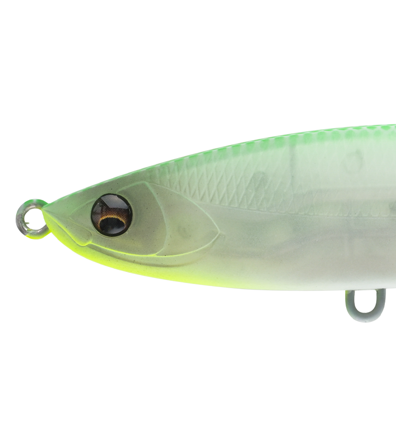
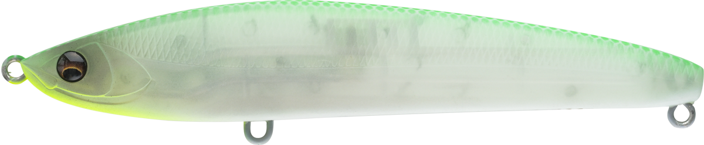
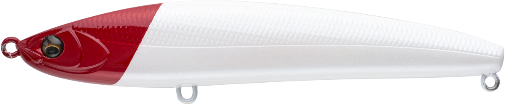
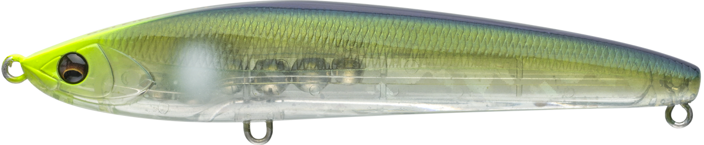
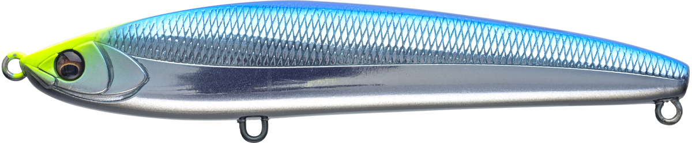

バレーヌ100FL
（リップレスミノー）
バレーヌ100FL（BALEINE100FL）はアピア（APIA）のリップレスミノーです。
リニアエンジン搭載により、低速域でもスムーズにアクションが立ち上がり、強い流れや高速リトリーブでも安定したアクションを維持。100mmクラス最高峰ともいえる飛距離と飛行姿勢の安定感が最大の魅力です。

画像出典:アピア公式HP
スペック
- メーカー
- アピア（APIA）
- タイプ
- リップレスミノー（フローティング）
- 全長
- 100mm
- 自重
- 14g
- フック
- #5×2pcs（BKK FANGS-62UA）
- レンジ
- 最大50cm
- ターゲット
- シーバス
- 価格
- 2,100円（税別）
▼今すぐチェック
バレーヌ100FLの特徴
リニアエンジン搭載で、低速から高速までどこでも安定して泳ぐリップレスミノー
-
リニアエンジンで低速域からスムーズに立ち上がる
内蔵のリニアエンジンにより、デッドスローのような低速リトリーブでもアクションがスムーズに立ち上がる。スピードを問わず誘いを入れやすい。
-
強い流れ・高速リトリーブでも安定したアクション
河川のヨレや流れの強いポイントでも、アクションが破綻しにくい設計。速巻きでも泳ぎが安定し、テンポよくサーチできる。
-
100mmクラス最高峰の飛距離と飛行姿勢
リップレスボディによる空気抵抗の少なさと重心設計により、同クラスの中でも高い飛距離と安定した飛行姿勢を実現。年間を通して多様なシチュエーションに対応できる。
バレーヌ100FLの使い方
基本はただ巻き。デッドスローからの立ち上がりが良いため、低活性時はスローリトリーブでじっくり見せ、反応が良い時は高速リトリーブでテンポよくサーチする、と速度を自在に切り替えられるのが強みです。
最大50cmまでのレンジをカバーできるため、表層で反応がない時はリトリーブスピードを落としてレンジを入れ直すなど、1本でレンジとスピードの両方を調整しながら探っていくのが基本の組み立てです。
バレーヌ100FLの得意な状況
流れの強い河川・河口や、速いリトリーブでテンポよく探りたい状況が最大の出番。
低速域での立ち上がりの良さを活かして低活性時のスローな誘いにも対応できるため、年間を通して様々なシチュエーションで選びたい1本です。
ワンポイント
反応が渋い時は、まずデッドスロー付近までリトリーブを落として、リニアエンジンの立ち上がりの良さを活かしたじっくりとした誘いを試してみましょう。
流れの強いポイントでは、流速に負けない速度までリトリーブを上げても泳ぎが破綻しにくいので、積極的にスピードを変えて反応を探るのがおすすめです。
オススメカラー
バレーヌ100FLは全11色展開。シチュエーションに合わせやすいオススメカラーを厳選して紹介します。

ハマーナイトナイトゲームでシルエットをしっかり出したい時に選びたいカラー。

レッドヘッドパール定番のレッドヘッド。マズメ時や濁り潮でも視認性を確保しやすい。

ドブボラ河口・汽水域のボラパターンにマッチするナチュラル系カラー。

ケイムラブルーバックケイムラ発光でナイトゲーム・薄暗い時間帯の視認性を高めたい時に。
画像出典:アピア公式HP
バレーヌ100FLに似ているルアー
-
 ラザミン90
BlueBlue
詳細はこちら＞
ラザミン90
BlueBlue
詳細はこちら＞
全長90mmのフローティングミノー。浅いレンジをキープしながら安定して泳がせたい狙いどころが共通する。
-
 コスケ110F
ima
詳細はこちら＞
コスケ110F
ima
詳細はこちら＞
全長110mmのフローティングミノー。サイズ感が近く、同じシーバス向けオールラウンダーとして持ち替えの候補になる。